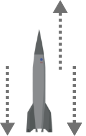

NEWTON'S THREE LAWS
To learn how a rocket flies, you must first understand Isaac Newton’s Laws of Motion. Together, they make the basis for how rockets are designed and navigated.
FIRST LAW
The first law describes inertia: objects remain in motion (or remain still) unless disturbed by a force. Thus, the gas fired down in take-off propels the rocket into space. The same mechanism moves the rocket forwards in space and keeps it in place on the launchpad.
SECOND LAW
Newton’s second law of motion states that force equals mass times acceleration (f= ma). Thus, the more gas (propellant) fired from the rocket, the greater the acceleration and thrust (see below). More technical rocket science also includes pressure in this equation.

THIRD LAW
The final law states that “for every action there is an equal and opposite action” (NASA). So, the force released by the rocket must be strong enough to drive the rocket where you want it to go. Additionally, the rocket must generate enough energy to leave the planet’s orbit (gravity), by the same law.

THRUST & DRAG
The concepts of thrust and drag are crucial to understanding basic rocket science. Thrust is the force that propels the rocket, which we know from Newton’s Laws, depend on the mass and acceleration of the propellant released by the rocket to overcome the force of gravity. Drag, or air resistance, also acts against thrust. Thus, the rocket must generate enough thrust to counteract both the force of gravity and the force from air resistance.